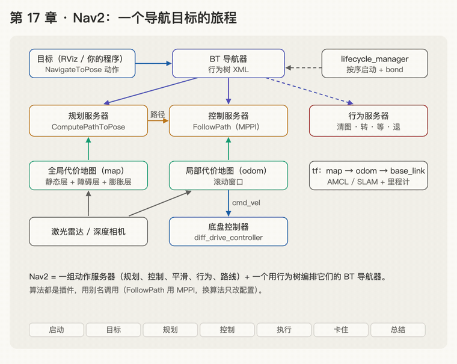

第 17 章 · Nav2：移动机器人导航栈
本章回答：在 RViz 里点一个目标点，机器人是怎么一路避开障碍开过去的？Nav2 由哪些服务器组成，各管什么？代价地图是什么？行为树在里面起什么作用？卡住了怎么办？
讲解日期：2026-11-13 · 上一章：第 16 章 硬件组件与控制器 · 下一章：第 18 章 MoveIt 2
对应原文：ecosystem/docs.nav2.org/docs/getting_started/navigation_concepts/下的navigation_servers.md、environmental_representation.md、behavior_trees.md；.../nav2_behavior_trees/trees/nav_to_pose_recovery.md（路径相对ros2/materials/）
对应 study-plan 阶段 G1–G4，动手里程碑 R-M8（TurtleBot 仿真里建图 / 定位 / 导航）。接具身导航专题（学习型导航对照经典栈）。
本章缩写：Nav2 = Navigation 2（ROS 2 导航栈）；BT = Behavior Tree（行为 / 树）；FSM = Finite State Machine（有限状态机）；HFSM = Hierarchical FSM（分层状态机）；MPPI = Model Predictive Path Integral（模型 / 预测 / 路径积分：一种采样式预测控制）；MPC = Model Predictive Control（模型预测控制）；DWB = Dynamic Window approach, version B（动态窗口法第二版）；RPP = Regulated Pure Pursuit（受调节的纯追踪控制器）；AMCL = Adaptive Monte Carlo Localization；SLAM = Simultaneous Localization And Mapping；LIDAR = Light Detection And Ranging（激光雷达）；A* = A-star（A 星算法：Dijkstra 加上到终点的估计距离）。全部缩写见 附录 · 缩写与术语表
本章先看总图，再分 3 步：
| 步 | 内容 | 状态 |
|---|---|---|
| 0 | 总图：一个导航目标在 Nav2 里走一遍 | ✅ |
| 1 | 五个服务器 + 插件：规划、控制、平滑、行为（恢复）、路线 | ✅ |
| 2 | 代价地图：栅格、层、膨胀、过滤器 | ✅ |
| 3 | 行为树导航器、生命周期、上手步骤 | ✅ |
讲解
总图 · 一个目标的旅程

可交互版：animations/17-nav2-flow.html（内置浏览器：http://localhost:8340/17-nav2-flow.html）。
类比：出租车公司。 调度员（行为树导航器）接到"去火车站"的单子，先让导航软件（规划服务器）在城市地图上算一条路线，再让司机（控制服务器）一边看路况一边沿路线开；遇到堵死的路，按预案（恢复行为）倒车、等一等、或换条路，实在不行再报告失败。
第 1 步 · 五个服务器 + 插件
依据：materials/ecosystem/docs.nav2.org/docs/getting_started/navigation_concepts/navigation_servers.md（下称"服务器文档"）。
Nav2 的核心是若干动作服务器（第 6 章），每个服务器里装着一组算法插件，起个"别名"供调用（服务器文档开头）：
| 服务器 | 做什么 | 用的环境表示 | 常用插件 |
|---|---|---|---|
| 规划服务器（planner） | 算一条从当前位姿到目标的全局路径 | 全局代价地图 | NavFn（Dijkstra / A）、Smac（混合 A、状态格，考虑车辆转弯半径）、Theta* |
| 控制服务器（controller，ROS 1 叫"局部规划器"） | 跟着路径走：每个周期算出速度指令 cmd_vel |
局部代价地图 | MPPI、RPP、DWB、Graceful、Rotation Shim |
| 平滑服务器（smoother） | 把锯齿状路径修平滑、离障碍远一点 | 全局代价地图 | 简单 / 约束平滑器 |
| 行为服务器（behavior） | 恢复和其他行为：清代价地图、原地转、等待、后退 | 订阅局部代价地图 | Spin、BackUp、Wait、ClearCostmap… |
| 路线服务器（route） | 在预先给定的导航图（车道、允许区域、示教路线）上找路线，而不是在空地上自由规划 | 导航图 | — |
别名的好处：行为树里写的是 FollowPath（"跟随路径"这类算法），配置里再说 FollowPath 用 MPPI；参数放在 FollowPath.<参数名> 下。换算法只改配置，行为树不动（服务器文档举的就是 DWB 叫 FollowPath 的例子）。
同一个服务器装多个插件：比如控制服务器同时装"跟路径"、"对接充电桩"、"进电梯"三个控制器，共用一份局部代价地图，省掉重复计算（服务器文档）。
MPPI 控制器（configuration_guide/controller_plugins/mppi_controller/）：每个周期以上一周期的最优控制为基础，随机采样一批扰动后的控制序列，向前模拟出一批轨迹，用一组插件式的"评价函数"（离路径多远、离障碍多近、朝向对不对……）打分，再按分数做 softmax 加权平均得到新控制；迭代几次后输出。评价函数不要求凸、不要求可导。支持差速、全向、阿克曼底盘，4 代 i5 上能跑 100 Hz 以上。
第 2 步 · 代价地图
依据：.../navigation_concepts/environmental_representation.md（下称"环境文档"）。
代价地图（costmap）：一张规则的二维栅格，每个格子一个代价：未知 / 空闲 / 被占 / 膨胀（环境文档）。规划器在里面搜索路径，控制器在里面采样检查轨迹。
两张图：
| 全局代价地图 | 局部代价地图 | |
|---|---|---|
| 范围 | 整张地图 | 机器人周围几米的滚动窗口 |
| 坐标系 | map |
odom（第 12 章：连续不跳） |
| 给谁 | 规划器、平滑器 | 控制器、行为服务器 |
| 更新 | 较慢 | 较快 |
层（layer）：代价地图由多层插件叠加：
- 静态层：读地图服务器的
/map（建好的地图，Transient local，第 7 章）； - 障碍层 / 体素层：把激光雷达、深度相机的实时数据标记成障碍；
- 膨胀层：在障碍周围按距离加一圈逐渐变小的代价，让机器人别贴着墙走。机器人外形用
robot_radius（圆形）或footprint（多边形）描述（服务器文档 "Robot Footprints"）。
代价地图过滤器（环境文档 Costmap Filters）：在一张"标注图"上画区域，让机器人在特定区域改变行为：禁行区、限速区、优先车道。
第 3 步 · 行为树导航器、生命周期、上手
行为树（BT）（.../navigation_concepts/behavior_trees.md）：把任务组织成一棵树，叶子是"计算路径"、"跟随路径"、"原地转"这类基本动作，中间节点规定顺序、重试、回退。比有几十个状态、几百条转换的有限状态机更好扩展、更容易看懂。Nav2 用 BehaviorTree.CPP v4，树写在 XML 里；整个 Nav2 树还能作为子树嵌进更大的任务树。Nav2 文档强烈推荐先读 Colledanchise & Ögren 那本行为树书的第 1–3 章（约 30 分钟）。
默认的"导航到位姿"树（.../nav2_behavior_trees/trees/nav_to_pose_recovery.md）：
- 正常时：每秒重规划一次（离目标太近就不再重规划），把路径交给控制器；
- 规划失败 → 清全局代价地图再试；控制失败 → 清局部代价地图再试；
- 还不行 → 进入恢复子树：依次清代价地图、原地转、等待、后退，每做一个恢复就重新尝试导航；
- 整个任务最多重试 6 次，再失败才报告失败；
- 随时检查
GoalUpdated：有新目标（抢占）时立刻放弃恢复、响应新目标。
入口：BT 导航器对外提供动作 NavigateToPose、NavigateThroughPoses 等。你的程序（或 RViz 的"Nav2 Goal"按钮、Python 的 Simple Commander API）就是这个动作的客户端。
全员托管节点：Nav2 所有服务器都是托管节点，由 lifecycle_manager 按顺序 configure / activate，并用 bond 心跳监视（第 11 章）。
定位：Nav2 需要第 12 章的 tf 主干 map → odom → base_link：AMCL（已有地图时的粒子滤波定位）或 SLAM Toolbox（边建图边定位）发 map → odom；里程计（第 16 章 diff_drive_controller 或 robot_localization 融合）发 odom → base_link。
上手（.../getting_started/quickstart/quickstart.md，R-M8）：
sudo apt install ros-lyrical-navigation2 ros-lyrical-nav2-bringup
ros2 launch nav2_bringup tb3_simulation_launch.py headless:=False
在 RViz 里先点 2D Pose Estimate 给初始位姿（让 AMCL 知道机器人大概在哪），再点 Nav2 Goal 给目标。
和本仓库的连接：具身导航专题里的学习型导航（VLN、导航基础模型）通常只替换"目标从哪来"或"控制器"这一环：语言指令 → 视觉语言模型给出目标点 → Nav2 规划和避障；或者学到的策略直接输出 cmd_vel，代价地图做安全兜底（collision monitor）。Nav2 是理解"经典栈每一环在做什么"的最好参照。
练习与作答记录
练习 17-1（第 1 步）：规划服务器和控制服务器各输出什么？为什么控制器用局部代价地图（在 odom 坐标系）而不是全局的？
- 作答：（待作答）
练习 17-2（第 2 步）：机器人总是贴着墙走，偶尔还蹭到。你会先调代价地图的哪一层、哪类参数？
- 作答：（待作答）
练习 17-3（第 3 步）：默认行为树里，控制器连续失败时会依次发生什么？什么情况会让它立刻放弃恢复？
- 作答：（待作答）
口诀
- 五服务器：规划算路、控制跟路、平滑修路、行为救急、路线走图；算法都是插件，用别名调。
- 两张代价地图：全局在 map 给规划，局部在 odom 给控制；静态层、障碍层、膨胀层叠起来。
- 行为树：每秒重规划，失败先清图，再转、等、退，最多重试六次；新目标随时抢占。
- 前提：tf 主干齐全，全员托管节点由 lifecycle_manager 拉起。
本章复习卡片编号
R40–R41，见 ../review.md。
附录 · 延伸阅读
留给以后深入学习用，不影响本章主线。★ 是建议先读的。
materials/指ros2/materials/；不带前缀的路径在materials/ros2_documentation/source/下（design/、ecosystem/开头的在materials/下）；...表示省略了和上一条相同的目录。
推荐阅读
| 读什么 | 读哪里 | 读它为了什么 |
|---|---|---|
★ navigation_concepts |
materials/ecosystem/docs.nav2.org/docs/getting_started/navigation_concepts/ |
ros2.md（托管节点与 bond）、behavior_trees.md、navigation_servers.md、state_estimation.md、environmental_representation.md。 |
★ quickstart.md |
.../getting_started/quickstart/quickstart.md |
TurtleBot 仿真上手；build_and_install/：安装与 Docker。 |
★ nav2_behavior_trees |
.../getting_started/nav2_behavior_trees/ |
detailed_behavior_tree_walkthrough/、trees/（各种预置树）、nav2_specific_nodes/。 |
configuration_guide |
.../configuration_and_development/configuration_guide/ |
各服务器与插件参数（MPPI、RPP、DWB、Smac、NavFn、Theta*、平滑器、代价地图层）。 |
tutorials |
.../tutorials/ |
建图、多机器人、代价地图过滤器、Simple Commander API、Docking 等教程；.../configuration_and_development/simple_commander_api/：用 Python 写导航任务。 |
| 书 | Colledanchise & Ögren, Behavior Trees in Robotics and AI: An Introduction（arXiv 1709.00084），第 1–3 章（Nav2 文档推荐）。 | — |
| 论文 | Williams et al., "Aggressive driving with model predictive path integral control"（ICRA 2016，MPPI 原始论文，Nav2 MPPI 文档链接的 IEEE 7487277）；Macenski et al., "The Marathon 2: A Navigation System"（IROS 2020，Nav2 系统论文）。 | — |
| 本仓库 | embodied-navigation-vln 综述。 | — |
数学原理
- Dijkstra 算法：每次从"已知最便宜"的格子往外扩，第一次到终点时代价最小；A* 再加一项到终点的估计距离。
公式清单
| 公式 / 规则 |
|---|
| 路径代价 = 每格 1 + 格子的膨胀代价，之和最小 |
代码对照：把本章的数字用代码算一遍
纯 Python 模拟，不需要 ROS 2（原因见第 1 章这一节）。代码在仓库本地
ros2/solutions/chapter-code/ch17_costmap_plan.py，配套测试tests/test_ch16_20.py；同名 notebook 在notebooks/ch17_costmap_plan.ipynb（讲解和代码放在一起，一格一格跑）。Mac 上直接能跑：
bash cd ros2/solutions/chapter-code uv run python ch17_costmap_plan.py # 一步一步打印 uv run pytest tests/test_ch16_20.py
讲义 ↔ 代码：
| 讲义 | 规则 / 数字 | 写法 | 跑出来 |
|---|---|---|---|
| 第 2 步 代价地图 | 被占 / 膨胀 / 空闲 | inflate(GRID) |
墙两侧和墙脚的格子标成 '+' |
| 第 1 步 规划器（无膨胀） | Dijkstra 找总代价最小 | dijkstra(GRID, START, GOAL, {}) |
14 格，贴着墙脚绕 |
| 第 2 步 加膨胀层 | 离障碍越近越贵 | dijkstra(..., extra) |
16 格，路上一个 '+' 都不经过 |
关键几行：
nd = d + 1 + extra.get(nb, 0.0) # 走一格代价 1，再加膨胀代价
if nd < best.get(nb, math.inf): # 找到更便宜的走法就更新
best[nb], prev[nb] = nd, cell
heapq.heappush(todo, (nd, nb)) # 小顶堆：每次先展开最便宜的
代码里才看得到的 3 件事：
- 膨胀代价是编的（距离 1 加 3、距离 √2 加 1.5），只表示"越近越贵"；Nav2 的膨胀层按指数衰减（
first_time_robot_setup_guide/sensors/mapping_localization.mdL126）。 - Dijkstra 和 A*：NavFn 插件两种都支持。A* 多加一项"离终点还有多远"的估计，展开的格子更少，路径代价一样。
- 只能上下左右走：真代价地图允许斜着走，路径会更顺。
自己改一改（不影响练习答案）：
- 把
GOAL改成 (4, 8)，看两种情况的路径； - 在
GRID第 4 行加一个 '#'，看规划器怎么绕。